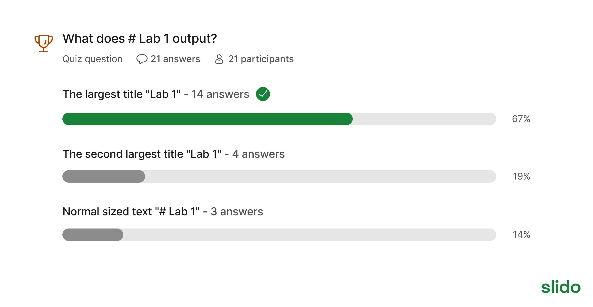
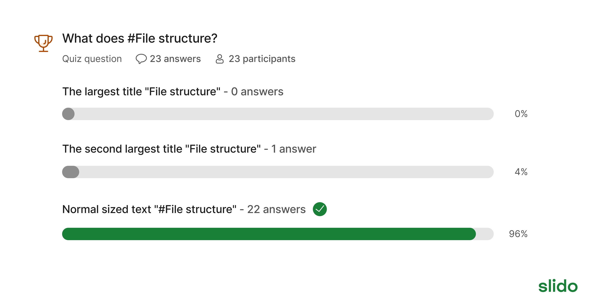
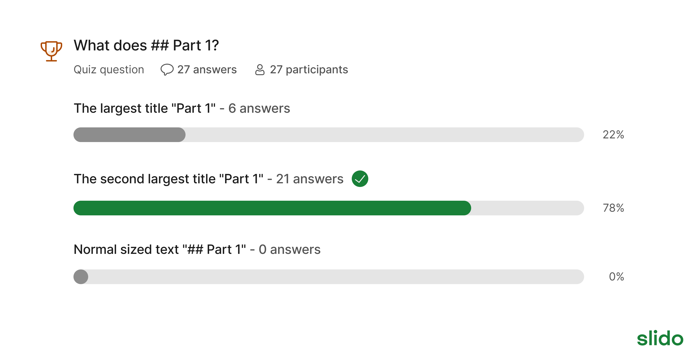
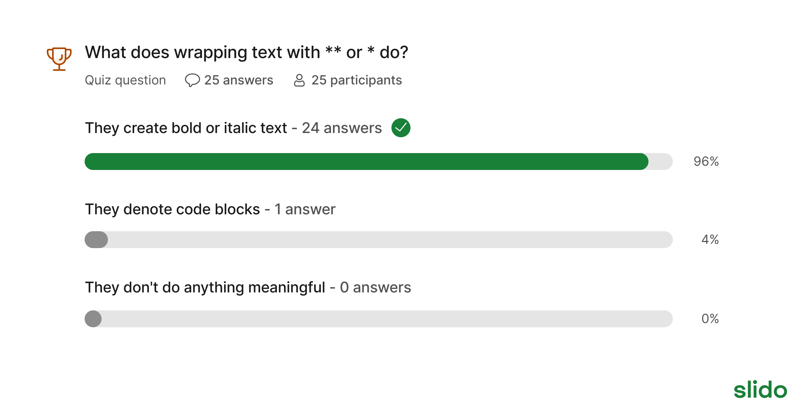
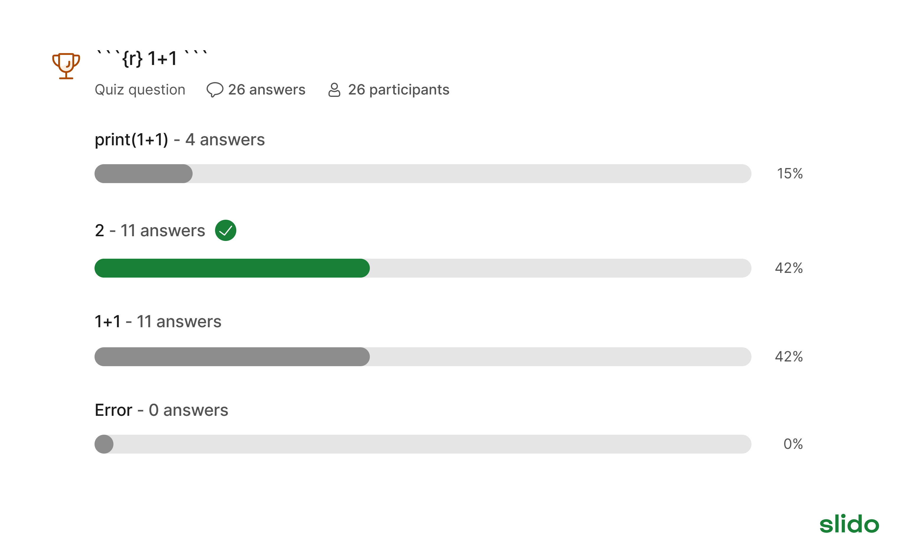
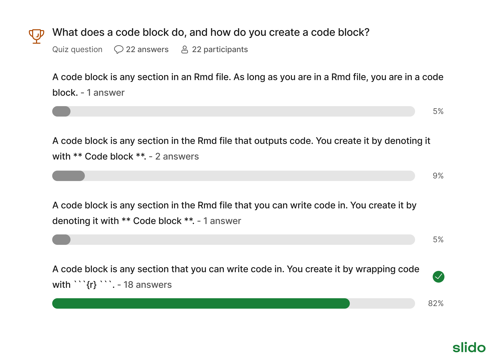
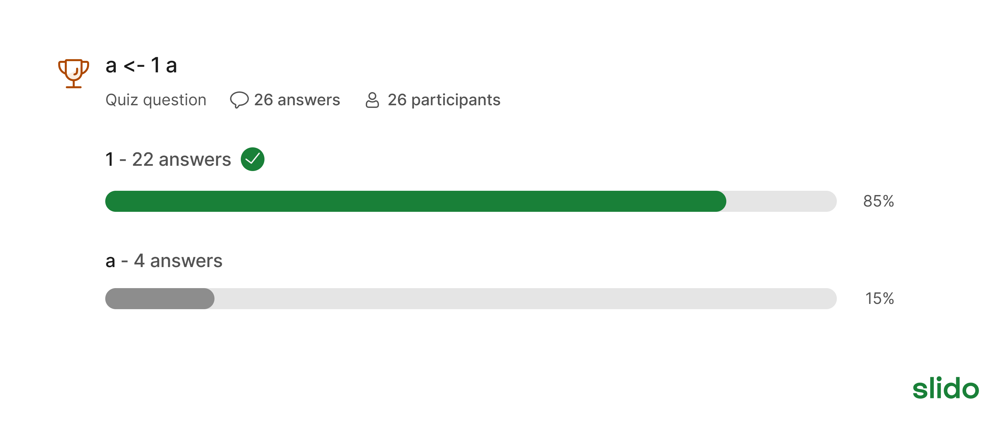
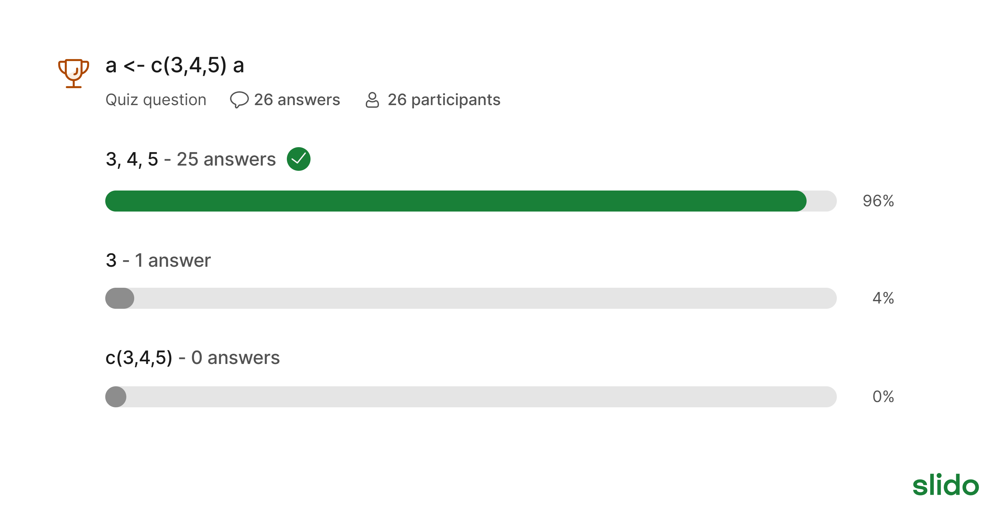
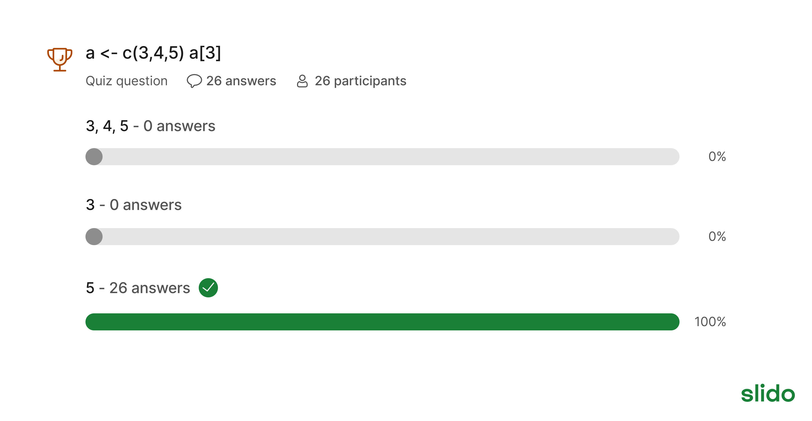

1: Welcome to PSYCH 420!
Install R and create RStudio project
- Install R: https://cloud.r-project.org/ · ↗ · ⤓
- Install RStudio: https://docs.posit.co/ide/user/#install-links · ↗ · ⤓
- Create an RStudio project in RStudio
- In RStudio click on
Project > New Project > Existing Directory - Select your
lab1folder
- In RStudio click on

- If you cannot complete these steps in allotted time, please find a someone who has successfully installed R to complete Part 1 of the lab. We will have time to troubleshoot at the end of class.
Complete Part 1: Slido questions
Reverse engineering is a skill that will not only help you learn to code, but will also help you learn to learn to code (even beyond this class). These Slido questions will help you practice the skill of reverse engineering.










Creating R Studio Project